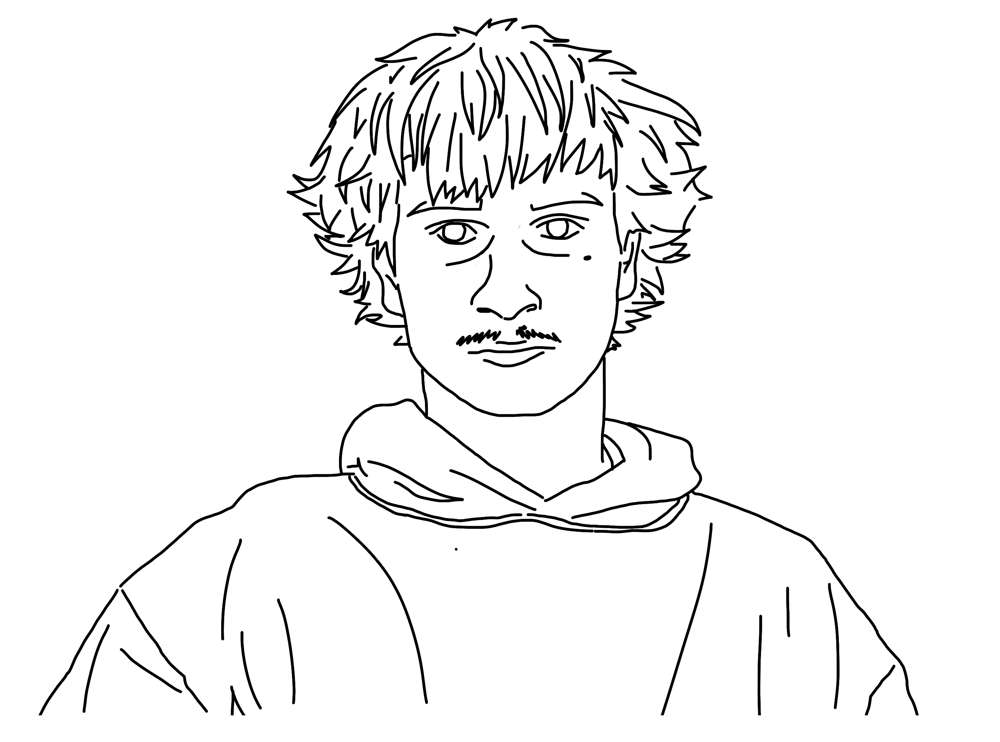

Systems
Hours

Reflection
For this website I chose to look over my screen time data, but more specifically my screen time on different forms of entertainment. I watch a lot of TV and read, so I wanted to see how these two activities divided my time. When reviewing my screen time, though, I also noticed a lot of small breaks in my reading, like every hour, to go on my phone or TikTok.
Looking at it in a data set really opened my eyes to how often I go back to the same app. Another big thing I noticed was that I only open 6 apps on my phone, even though I have over 50 downloaded. I spent more than 10 hours on TikTok a week, which, after seeing it, has made me try to stop using it as much. The data shown to me on screen revealed that almost every hour and a half, if I am watching TV or reading, I will stop and check my phone.
This revelation makes me want to try and remove the app. Moving forward, I am definitely going to try to break away from doomscrolling and focus more time on reading or watching TV shows and movies. I was surprised at how low my overall time was, though. I assumed I spent more than 10 hours a week on my phone, but almost every week I never had anything higher than 9. After looking at all my data, though, I can say I am a bit worried about the amount of time my phone takes from me.
Overall, I am proud of my self-portrait and the design and how it works. Seeing the data changed how I think about the time I spend on my phone and how often I drift into doom scrolling. Since then, I have tried to put more of my time into real-life sources of entertainment, like books, skateboarding, going outside, and talking to people in person. It feels better when I do that, even if it is just for half an hour. TikTok is still hard to cut out, and I still find myself going on it at night and in the morning.
While working on this assignment, I started to notice the systems I have already made for myself. There were clear patterns in which days I used Tik Tok and for how long. If I had a lot of classes, the number was lower, and when I had fewer classes, the time was much higher, except on Fridays. I assume that is because I spend more time with people on Fridays. After recognizing these systems and patterns, it became a lot easier to avoid TikTok. Moving forward, I plan to look for more patterns in my life and change them in ways that lift my mood and productivity.